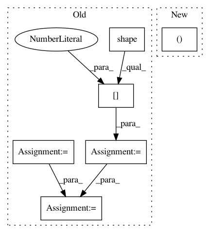

bb099e4c5b48329b842dbf9884f086f7b514bc0a,gpflow/models/model.py,GPModel,predict_f_samples,#GPModel#Any#Any#Any#Any#,112
Before Change
Produce samples from the posterior latent function(s) at the input points.
mu, var = self.predict_f(Xnew, full_cov=full_cov) // [N, P], [P, N, N]
num_latent_gps = var.shape[0]
num_elems = tf.shape(var)[1]
var_jitter = ops.add_to_diagonal(var, default_jitter())
L = tf.linalg.cholesky(var_jitter) // [P, N, N]
V = tf.random.normal([num_latent_gps, num_elems, num_samples], dtype=mu.dtype) // [P, N, S]
LV = L @ V // [P, N, S]
mu_t = tf.linalg.adjoint(mu) // [P, N]
return tf.transpose(mu_t[..., np.newaxis] + LV) // [S, N, P]
After Change
)
// check below for shape info
mean, cov = self.predict_f(Xnew, full_cov=full_cov, full_output_cov=full_output_cov)
if full_cov:
// mean: [..., N, P]
// cov: [..., P, N, N]
In pattern: SUPERPATTERN
Frequency: 3
Non-data size: 6
Instances
Project Name: GPflow/GPflow
Commit Name: bb099e4c5b48329b842dbf9884f086f7b514bc0a
Time: 2020-03-16
Author: dutordoirv@gmail.com
File Name: gpflow/models/model.py
Class Name: GPModel
Method Name: predict_f_samples
Project Name: broadinstitute/keras-rcnn
Commit Name: b7d7629403248b10b0e922c43c9d545997ad2233
Time: 2017-08-28
Author: jyhung@broadinstitute.org
File Name: keras_rcnn/layers/object_detection/_object_proposal.py
Class Name: ObjectProposal
Method Name: call
Project Name: markovmodel/PyEMMA
Commit Name: 3bdd46a595cc600c8b56c045530d1901639a7b2f
Time: 2017-05-24
Author: m.scherer@fu-berlin.de
File Name: pyemma/plots/networks.py
Class Name:
Method Name: plot_flux